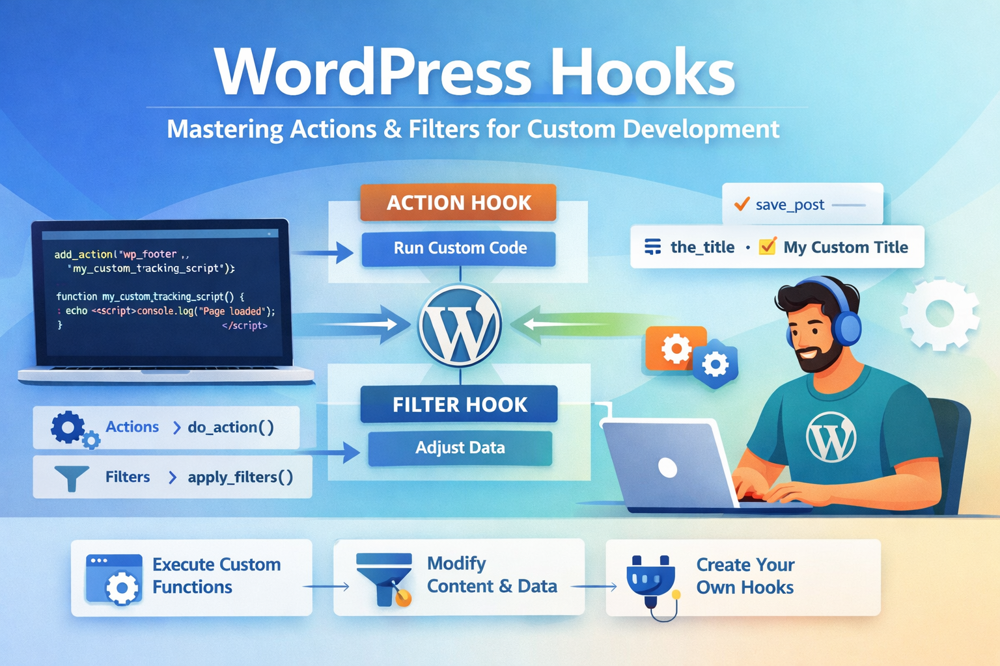

WordPress hooks are the backbone of extensible WordPress development. They let you inject custom code at specific points in WordPress's execution without editing core files — which means your customizations survive updates and remain maintainable for years.
After building 100+ WordPress plugins and custom themes over 15 years, I can say: understanding hooks deeply is the single most important skill for any serious WordPress developer. This guide covers everything from the fundamentals to advanced patterns I use on production sites.
What Are WordPress Hooks?
WordPress hooks are a form of the observer pattern. WordPress "fires" a hook at a specific point during execution (loading a page, saving a post, sending an email). Your code "hooks in" to listen for that event and run when it fires.
There are two types of hooks:
- Actions — let you execute your own code at a specific point. WordPress runs a hook, your code runs. You don't return a value.
- Filters — let you modify data before WordPress uses it. WordPress passes a value through a filter; you can change it and must return it.
Actions: add_action and do_action
Actions use two core functions:
do_action( $hook_name, ...$args )— fires an action hook (called by WordPress core or your code)add_action( $hook_name, $callback, $priority, $accepted_args )— registers your callback to run when that hook fires
// WordPress fires 'wp_footer' near the closing </body> tag.
// We hook in to inject our custom tracking script.
add_action( 'wp_footer', 'my_custom_tracking_script' );
function my_custom_tracking_script() {
echo '<script>console.log("Page loaded");</script>';
}
// Equivalent using an anonymous function (PHP 5.3+):
add_action( 'wp_footer', function() {
echo '<script>console.log("Page loaded");</script>';
} );Priority and Accepted Arguments
add_action takes two optional parameters that are often misunderstood:
add_action( $hook_name, $callback, $priority = 10, $accepted_args = 1 );
// $priority (default 10): lower = runs earlier. Range: 1–9999.
// $accepted_args: how many arguments your callback accepts.
// Example: run AFTER default WordPress functions (priority > 10)
add_action( 'init', 'my_late_init', 20 );
// Example: accept all arguments passed by the hook
add_action( 'save_post', 'on_post_saved', 10, 3 );
function on_post_saved( $post_id, $post, $update ) {
if ( $update ) {
// Post was updated, not created
error_log( 'Post updated: ' . $post->post_title );
}
}Filters: add_filter and apply_filters
Filters modify data flowing through WordPress. The critical rule: always return a value in a filter callback. Forgetting to return will break your site silently.
// apply_filters() is called by WordPress to pass data through registered filters.
// add_filter() registers your callback.
// Example 1: Modify the post title on the frontend
add_filter( 'the_title', 'prefix_post_title' );
function prefix_post_title( $title ) {
if ( is_singular() ) {
return '📝 ' . $title; // prefix with an icon
}
return $title; // ALWAYS return the value
}
// Example 2: Modify the_content to add a CTA after every post
add_filter( 'the_content', 'append_post_cta' );
function append_post_cta( $content ) {
if ( is_single() && in_the_loop() && is_main_query() ) {
$cta = '<div class="post-cta"><p>Found this useful? <a href="/contact">Hire me</a> for your next project.</p></div>';
return $content . $cta;
}
return $content;
}
// Example 3: Modify login redirect URL
add_filter( 'login_redirect', 'custom_login_redirect', 10, 3 );
function custom_login_redirect( $redirect_to, $requested_redirect_to, $user ) {
if ( $user && isset( $user->roles ) && in_array( 'editor', $user->roles ) ) {
return admin_url( 'edit.php' ); // redirect editors to posts list
}
return $redirect_to;
}Creating Custom Hooks
You can define your own hooks in plugins or themes to make your own code extensible. This is how premium plugin developers let users extend their plugins without editing files.
// In your plugin: define a custom action hook
function my_plugin_process_order( $order_id ) {
$order = get_order( $order_id );
// ... your order processing logic ...
// Fire a custom action — other plugins/themes can hook in here
do_action( 'my_plugin_after_order_processed', $order_id, $order );
}
// In your plugin: define a custom filter hook
function my_plugin_get_shipping_cost( $base_cost, $order ) {
// Allow other code to modify the shipping cost
return apply_filters( 'my_plugin_shipping_cost', $base_cost, $order );
}
// In a client's child theme: extend the plugin without editing it
add_action( 'my_plugin_after_order_processed', function( $order_id, $order ) {
// Send a Slack notification when an order is processed
send_slack_notification( 'New order: #' . $order_id );
}, 10, 2 );
add_filter( 'my_plugin_shipping_cost', function( $cost, $order ) {
// Free shipping for orders over ₹2000
if ( $order->get_total() > 2000 ) {
return 0;
}
return $cost;
}, 10, 2 );Essential WordPress Action Hooks
Page Lifecycle Hooks (in execution order)
muplugins_loaded — Must-use plugins loaded
plugins_loaded — All plugins loaded
setup_theme → after_setup_theme — Theme loaded
init — WordPress initialised (register CPTs, taxonomies here)
wp_loaded — After init, before query
wp_enqueue_scripts — Enqueue front-end CSS/JS here
wp_head — Inside <head> tag
the_post — Before post content renders
wp_footer — Before </body>
Content & Admin Hooks
save_post — When a post is saved (created or updated)
delete_post — When a post is deleted
user_register — New user registered
wp_login — User logs in
admin_init — WordPress admin initialised
admin_menu — Add custom admin menu items
admin_enqueue_scripts — Enqueue admin CSS/JS
Essential WordPress Filter Hooks
// the_title — filter post titles
add_filter( 'the_title', function( $title ) { return $title; } );
// the_content — filter post body HTML
add_filter( 'the_content', function( $content ) { return $content; } );
// excerpt_length — change default excerpt word count (default: 55)
add_filter( 'excerpt_length', function( $length ) { return 30; } );
// excerpt_more — change the "..." at end of excerpts
add_filter( 'excerpt_more', function() { return ' […]'; } );
// wp_title / document_title_parts — SEO title manipulation
add_filter( 'document_title_parts', function( $title ) {
$title['tagline'] = 'Custom Site Tagline';
return $title;
} );
// body_class — add custom CSS classes to <body>
add_filter( 'body_class', function( $classes ) {
if ( is_page( 'about' ) ) {
$classes[] = 'about-page';
}
return $classes;
} );
// wp_nav_menu_items — add items to navigation menus
add_filter( 'wp_nav_menu_items', function( $items, $args ) {
if ( $args->theme_location === 'primary' ) {
$items .= '<li class="menu-item"><a href="/contact">Hire Me</a></li>';
}
return $items;
}, 10, 2 );
// upload_mimes — allow additional file types in Media Library
add_filter( 'upload_mimes', function( $mimes ) {
$mimes['svg'] = 'image/svg+xml';
$mimes['webp'] = 'image/webp';
return $mimes;
} );Removing Hooks: remove_action and remove_filter
You can remove hooks that were added by themes, plugins, or WordPress core. This is how you cleanly override behaviour without editing other people's code.
// To remove a hook, you need: hook name, callback reference, and priority.
// The callback MUST be a named function or a stored reference — not an inline closure.
// Example: remove a theme's default footer credit
remove_action( 'my_theme_footer', 'my_theme_display_credit', 10 );
// Example: remove WordPress's default oEmbed discovery links
remove_action( 'wp_head', 'wp_oembed_add_discovery_links' );
remove_action( 'wp_head', 'wp_oembed_add_host_js' );
// Example: remove XML-RPC pingback (security best practice)
add_filter( 'xmlrpc_methods', function( $methods ) {
unset( $methods['pingback.ping'] );
return $methods;
} );
// You cannot remove anonymous closures directly.
// This is why named callbacks are preferred in removable hooks:
function my_theme_display_credit() {
echo '<p>Theme by My Theme</p>';
}
add_action( 'my_theme_footer', 'my_theme_display_credit', 10 );
// Later, in child theme:
remove_action( 'my_theme_footer', 'my_theme_display_credit', 10 ); // works!Hook Execution Order Debugging
When hooks fire in unexpected orders, use current_filter() and doing_action() to debug:
// Log every hook as it fires (development only — never use in production!)
add_action( 'all', function( $hook ) {
if ( strpos( $hook, 'my_plugin' ) !== false ) {
error_log( 'Firing hook: ' . $hook . ' | Priority stack: ' . current_filter() );
}
} );
// Check if a specific action has fired
if ( did_action( 'init' ) ) {
// init has already run
}
// Check if we're currently inside a specific hook
if ( doing_action( 'save_post' ) ) {
// We're inside save_post right now
}
// Check if a filter/action has been registered
if ( has_action( 'wp_footer', 'my_tracking_function' ) ) {
remove_action( 'wp_footer', 'my_tracking_function' );
}Best Practices for Production WordPress Development
1. Use Namespaced Function Names
Prefix all your functions and hook callbacks to avoid collisions with other plugins:
// BAD — collides with any other plugin using the same name
add_action( 'init', 'register_post_types' );
// GOOD — unique prefix prevents collisions
add_action( 'init', 'myplugin_register_post_types' );
function myplugin_register_post_types() { /* ... */ }2. Check Context Before Acting
Many performance issues come from hooks running on every page load. Always check context:
add_action( 'wp_enqueue_scripts', 'myplugin_enqueue_assets' );
function myplugin_enqueue_assets() {
// Only load on specific page — not everywhere
if ( ! is_page( 'checkout' ) ) {
return;
}
wp_enqueue_script( 'my-checkout-js', plugin_dir_url(__FILE__) . 'checkout.js', ['jquery'], '1.0', true );
}3. Late Hook Registration
Some hooks need to be registered very early. Others should wait. Use the right hook for the right job:
// Register custom post types on 'init' (not earlier)
add_action( 'init', 'myplugin_register_cpt' );
// Enqueue admin scripts only on admin pages
add_action( 'admin_enqueue_scripts', 'myplugin_admin_scripts' );
// Add meta boxes only in admin
add_action( 'add_meta_boxes', 'myplugin_add_meta_boxes' );
// Flush rewrite rules ONCE after CPT registration, not on every load
register_activation_hook( __FILE__, function() {
myplugin_register_cpt();
flush_rewrite_rules();
} );flush_rewrite_rules() is expensive. Never call it on init or any hook that fires on every request. Only call it on plugin activation/deactivation or after intentional settings changes.
sanitize_text_field(), absint(), esc_html(), wp_kses_post() as appropriate for the data type.